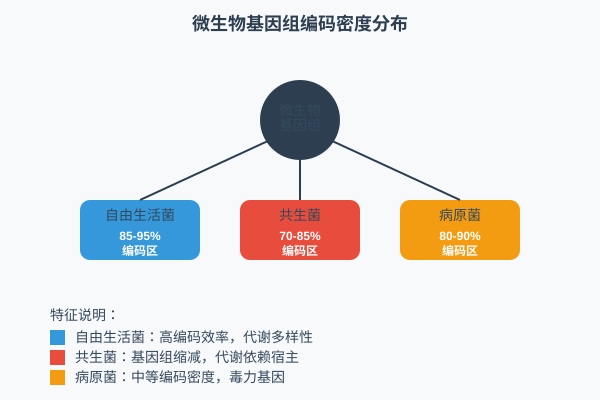
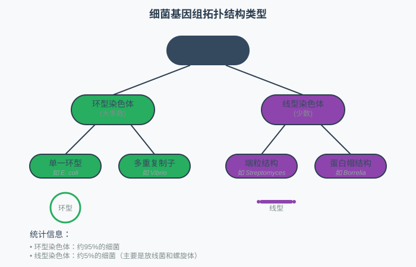
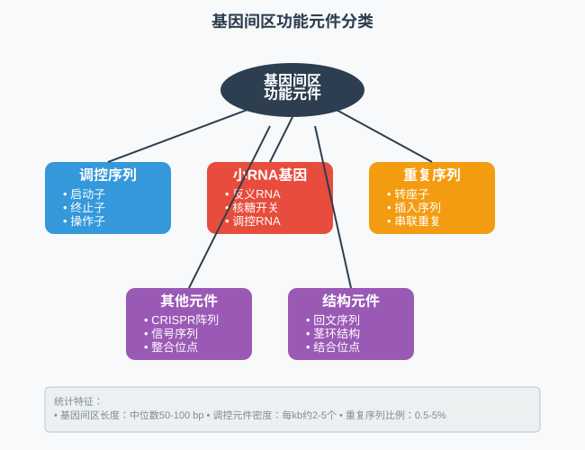
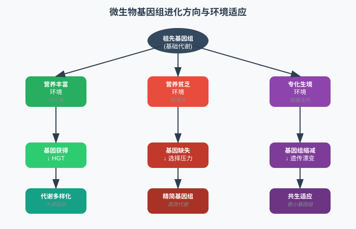
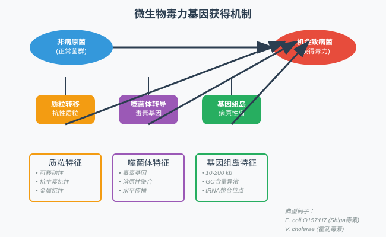

王运生 2025
理论部分 (90分钟)
互动环节 (30分钟)
完成本次课程后，学生应能够：

高GC含量通常与高温环境适应相关，但也受系统发育约束

为什么共生细菌的基因组通常比自由生活细菌小得多？这种基因组缩减对宿主-共生体关系有什么影响？
如果发现一个新的微生物基因组GC含量为65%，你能从中推断出什么信息？需要哪些额外数据来验证你的推测？
讨论时间：5分钟
lac操纵子: P-lacI-P-lacZ-lacY-lacA trp操纵子: P-trpE-trpD-trpC-trpB-trpA P: 启动子区域 基因间距: 通常1-20 bp

串联重复
散在重复
必需功能质粒
附加功能质粒

大片段重排
小片段重排
自由生活
专性共生
1. 以下哪种微生物最可能具有最小的基因组？ A) 土壤中的自由生活细菌 B) 昆虫细胞内的共生细菌 C) 海洋中的浮游细菌 D) 极端环境中的古菌
2. 请简述水平基因转移对微生物基因组进化的重要意义，并举例说明
代价
收益

代谢多样性
代谢专化
概念梳理：绘制微生物基因组进化机制的概念图
深入探索：选择一个极端环境微生物，调研其基因组适应特征
数据探索：浏览NCBI Genome数据库，比较不同生活方式微生物的基因组特征
fit